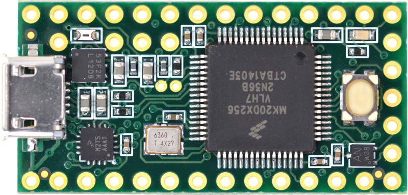
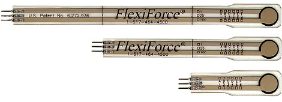
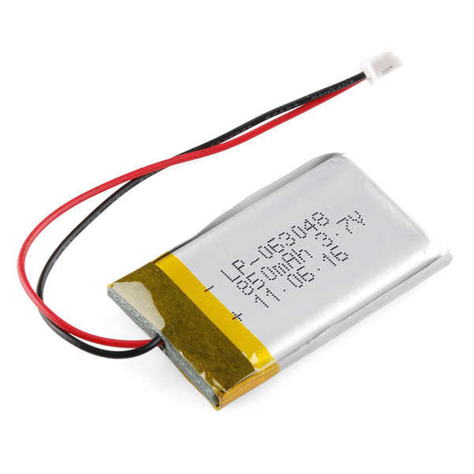
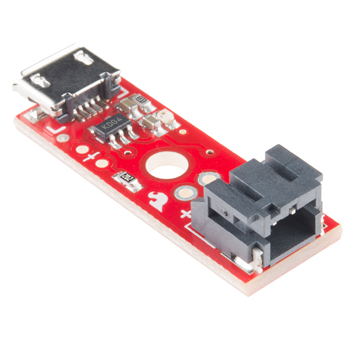
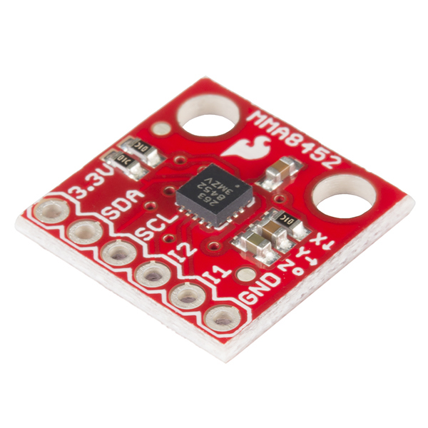
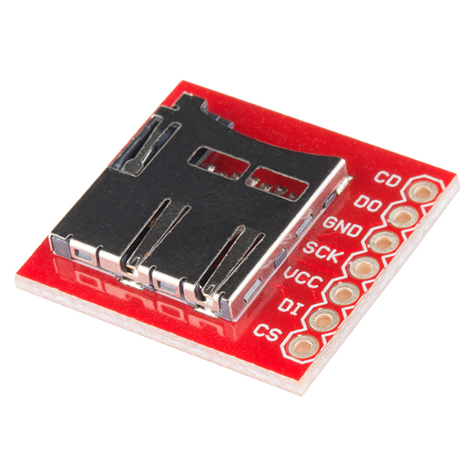
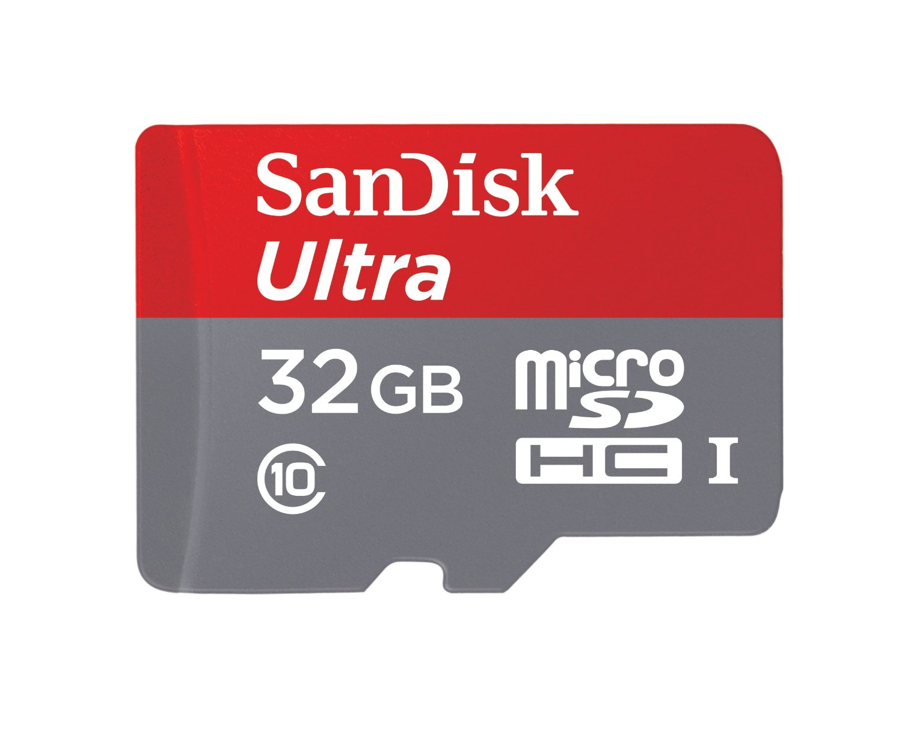

High Level Design
The high level design of this project is very simple. In large, its broken into three parts, the wearable device, the intermediate device(the mobile device) and the webserver. Each patient is given two wearable device, one for each foot. These devices are a series of force sensative resistors, and a triple axis accelerometer connected to a single microcontroller. This wearable device records various pieces of data from around the foot when the patient moves. It records things such as different pressure points, speed, and stride. As the information comes in, it is stored locally on a SD card. On a regular interval, the wearable device will transmit that stored data, via BlueTooth to the intermediate device.
As the intermediate device recieves data, it stores that data locally. When the device has a WiFi connection, it will begin to offload that data to a webserver. The webserver than stores the data in a database to for ease of accesses. The webserver also will do some basic analysis on that data, and can provide feedback to the user through any web browser.

Tools
Languages: C, Java
Database: PostgreSQL
Wearable Device Hardware

Polymer Lithium Ion Battery - 850mAh
LiPo Charger Basic - Micro-USB
Triple Axis Accelerometer Breakout

Mobile Device Hardware

